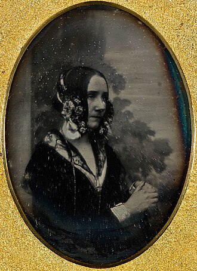
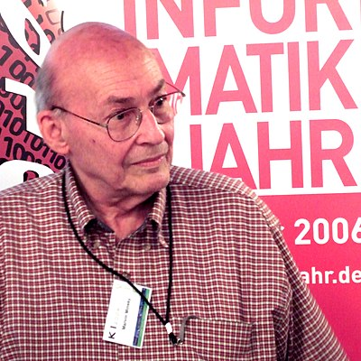

Historia de la Informática
La evolución de la computadora probablemente comenzó con el deseo humano de comprender y manipular el entorno.
Los primeros humanos reconocieron el fenómeno de la cantidad y usaron sus dedos para contar y actuar sobre objetos materiales en su mundo.
Métodos simples como estos eventualmente dieron paso a la creación, en Mesopotamia y China, de dispositivos proxy como el ábaco, que permitió la acción sobre cantidades más grandes de elementos, y tabletas de cera, en las que símbolos presionados permitieron el almacenamiento de información. Con la frase "dispositivos proxy" se hace referencia a herramientas o dispositivos que fueron creados para ayudar a los seres humanos a comprender y manipular su entorno de una manera más eficiente.
El ábaco consiste en un marco con cuentas o fichas que se mueven a lo largo de barras o alambres y se utiliza para realizar operaciones aritméticas básicas, como la suma, resta, multiplicación y división.
Las cuentas representan las unidades, decenas, centenas, unidades de millar, decenas de millar, centenas de millar, etc. Es considerado el precursor de la calculadora digital moderna. Utilizado por mercaderes en la Edad Media a través de toda Europa y el mundo árabe, fue reemplazado en forma gradual por la aritmética basada en los números indo-árabes. Aunque poco usado en Europa después del siglo XVIII, todavía se emplea en Medio Oriente, Rusia, China, Japón y Corea.
El ábaco chino o suanpan es una versión más sofisticada del ábaco común, que se utilizaba para realizar cálculos rápidos y precisos. Consiste en un marco rectangular con cuentas dispuestas en columnas. Las cuentas se mueven hacia abajo y hacia arriba para representar diferentes valores numéricos.
Usualmente, un suanpan mide aproximadamente 20 cm de largo y, según su aplicación, es de ancho variable y con más de siete filas: 2 cuentas en cada fila superior y 5 en la parte inferior. Esta configuración se utiliza tanto para cómputos decimales como hexadecimales. Las cuentas son por lo general redondeadas y hechas de madera dura. Se contabilizan las cuentas al moverlas a través de los fieles, pudiéndose restaurar la posición inicial instantáneamente, con un rápido tirón a lo largo del eje horizontal para alejar las cuentas del centro.
Ábaco chino
Antes de la década de 1920, el término computador se refería a un ser humano que realizaba cálculos.
Los primeros cimientos de lo que se convertiría en informática son anteriores a la invención de la computadora digital moderna.
Las máquinas para el cálculo de las tareas numéricas fijas, como el ábaco, han existido desde la antigüedad, ayudando en cálculos tales como la multiplicación y la división. Las tareas numéricas fijas son aquellas que implican realizar cálculos matemáticos repetitivos y rutinarios, que no varían en función de las circunstancias o el contexto. Estas tareas suelen ser simples y se realizan mediante procedimientos estandarizados y algoritmos predefinidos. Ejemplos de tareas numéricas fijas incluyen sumas, restas, multiplicaciones y divisiones de números, así como la verificación de resultados y la corrección de errores. A menudo, estas tareas se realizan con la ayuda de herramientas de cálculo, como calculadoras, hojas de cálculo y software de contabilidad, para agilizar el proceso y reducir errores. Los algoritmos para realizar cálculos han existido desde la antigüedad, incluso antes de que se crearan equipos de computación sofisticados. El antiguo Shulba Sutras, o "Reglas de la cuerda", es un libro de algoritmos escritos en 800 a. C. para la construcción de objetos geométricos como altares utilizando una clavija y cuerda, un precursor temprano del campo moderno de la geometría computacional. El progreso continuo dependió de aprovechar y controlar el poder del mundo natural: vapor, electricidad, luz y finalmente el asombroso potencial del mundo cuántico. Con el tiempo, los nuevos dispositivos aumentaron nuestra capacidad para guardar y encontrar lo que ahora llamamos datos, comunicarnos a larga distancia y crear productos de información ensamblados a partir de innumerables billones de elementos, todos transformados en un formato digital uniforme.La esencia de la computación es la capacidad de aumentar lo que podemos hacer con nuestras mentes, llegando a niveles de capacidad sobrehumanos. Estas capacidades sobrehumanas que la mayoría de nosotros ahora damos por sentado tardaron mucho en llegar, y solo en los últimos años se ha generalizado su acceso a nivel global. Anteriormente, la comunicación instantánea proporcionada por el telégrafo y la telefonía de larga distancia estaba disponible solo para gobiernos, grandes corporaciones y personas adineradas. Hoy en día, la capacidad de enviar mensajes internacionales e instantáneos como el correo electrónico es prácticamente gratuita para la mayoría de la población mundial.
Existe una serie de historias conectadas sobre cómo se produjo este cambio, con eventos fundamentales en la historia de la informática. El desarrollo de la informática es en gran parte la historia de la tecnología, tanto porque ninguna invención ocurre en aislamiento, como porque la tecnología y la informática están inexorablemente vinculadas; las tecnologías fundamentales han permitido a las personas crear dispositivos informáticos complejos, que a su vez han impulsado la creación de tecnologías cada vez más sofisticadas. El mismo tipo de retroalimentación ha acelerado otras áreas relacionadas, como las matemáticas de la criptografía y el desarrollo de sistemas de comunicaciones de alta velocidad. Por ejemplo, el desarrollo de la criptografía de clave pública en la década de 1970 proporcionó la base matemática para enviar de manera segura números de tarjetas de crédito a través de Internet en la década de 1990. Esto incentivó a muchas empresas a invertir dinero en la construcción de sitios web y sistemas de comercio electrónico, que a su vez proporcionaron el capital financiero para tender redes de fibra óptica de alta velocidad e investigar la tecnología necesaria para construir microprocesadores cada vez más rápidos. La historia de la informática tiene una serie de olas tecnológicas superpuestas.
Computación humana
Los primeros "computadores" eran humanos que realizaban cálculos repetidos durante días, semanas o meses. Los primeros computadores humanos trazaron con éxito la trayectoria del cometa Halley. Después de esta demostración, se pusieron a trabajar equipos para producir tablas para la navegación y el cálculo de logaritmos, con el objetivo de mejorar la precisión de los barcos de guerra y la artillería.
La era del cálculo mecánico
A partir del siglo XVII con la invención de la regla de cálculo, el cálculo se realizó cada vez más con la ayuda de dispositivos mecánicos. Esta era se caracteriza por mecanismos como la regla de cálculo de Oughtred, el aritmómetro y máquinas como la "máquina diferencial" y la "máquina analítica" de Charles Babbage, en el siglo XIX, considerada como la precursora de la computadora moderna. Blaise Pascal diseñó y construyó la primera calculadora mecánica de trabajo, la "Pascalina", en 1642. Este dispositivo mecánico fue diseñado para realizar cálculos aritméticos simples, como sumas y restas. La "Pascalina" se basaba en un mecanismo de ruedas dentadas que permitía sumar cantidades predefinidas con facilidad. Aunque tenía limitaciones de funcionalidad y capacidad, sentó las bases para el desarrollo de futuras máquinas de calcular.
Pascalina
Máquinas analíticas
A principios del siglo XIX, el matemático británico Charles Babbage diseñó dos máquinas revolucionarias, la "máquina diferencial" y la "máquina analítica".
La "máquina diferencial", concebida en 1822, estaba destinada a calcular tablas matemáticas mediante el uso de diferencias finitas. Su diseño influyó en el desarrollo posterior de las computadoras.
La "máquina analítica", concebida en 1830, es considerada la precursora de las computadoras modernas. Esta máquina teórica fué diseñada para realizar cualquier cálculo matemático siguiendo instrucciones almacenadas en tarjetas perforadas, lo que la convierte en la primer máquina programable. Incluía componentes claves como la "unidad de control", la "unidad aritmética" y la "memoria", conceptos fundamentales en la arquitectura de las computadoras modernas.
Máquina Analítica
A pesar de que las máquinas de Pascal y Babbage eran mecánicas y no eléctricas, sentaron las bases de la computación moderna como la automatización de cálculo, el almacenamiento de datos y la programación. Sus innovaciones allanaron el camino para futuros avances en la tecnología de la computación que conducirían al surgimiento de las computadoras electrónicas del siglo XX.
La primera programadora: Ada Lovelace
Ada Lovelace colaboró con Babbage en el desarrollo de la máquina analítica. Sus notas incluyen el primer algoritmo para ser procesado por una máquina, lo que la convierte en la primera programadora conocida. Nacida como Augusta Ada Byron en 1815, fue una matemática y escritora británica, conocida por su trabajo pionero en la computación temprana. Era única hija legítima del poeta Lord Byron y Anna Isabella Noel Byron.
Ada conoció a Babbage en 1833, cuando sólo tenía 17 años. Babbage, impresionado por su talento matemático, la contrató para el proyecto de su máquina analítica. Lovelace comprendió rápidamente los conceptos necesarios y comenzó a colaborar en el desarrollo. En 1843 escribió una serie de notas sobre la máquina analítica que incluía un algoritmo detallado para calcular los números de Bernoulli. Este algoritmo se considera el primer algoritmo para ser procesado por una máquina, lo que la convierte en la primera programadora conocida de la historia. Además de estas notas, Lovelace anticipó muchas de las ideas claves para la informática moderna como son los conceptos los bucles y subrutinas.
A pesar de que la máquina analítica nunca se construyó completamente, el trabajo de Ada sentó las bases para el desarrollo posterior de la informática y su visión y comprensión de la máquina asi como su habilidad para anticipar su potencial la han convertido en una figura icónica en el campo de la informática.
Ada Lovelace
Almacenamiento mecánico de datos
En el siglo XVIII, ingenieros que trabajaban en una variedad de sistemas diferentes encontraron la idea de usar agujeros en tarjetas y cintas para representar patrones repetitivos de información que podían ser almacenados y actuados automáticamente. El telar de Jacquard utilizó agujeros en tarjetas rígidas para permitir a los telares automáticos tejer patrones complejos y repetitivos. Herman Hollerith manejó la escala y complejidad del procesamiento de información de población para el Censo de los Estados Unidos de 1890 en tarjetas perforadas más pequeñas, y Émile Baudot creó un dispositivo que permitía a los operadores humanos perforar agujeros en una cinta de papel para representar caracteres como una forma de hacer un uso más eficiente de las líneas telegráficas de larga distancia. El álgebra de Boole nos permite interpretar estas representaciones de información (agujeros y espacios) como binarias, 1 y 0, alterando fundamentalmente cómo se procesa y almacena la información.
Comunicación y computación eléctricas
Con la captura y control de la electricidad, tanto Charles Wheatstone en Inglaterra como Samuel Morse en Estados Unidos construyeron sistemas que podían enviar información digital por un cable durante muchos kilómetros. A finales del siglo XIX, los ingenieros habían unido millones de millas de cables con relés, interruptores y sonidos, así como los recién inventados altavoces y micrófonos, para crear vastas redes internacionales de comunicaciones telegráficas y telefónicas. En la década de 1930, científicos en Inglaterra, Alemania y Estados Unidos se dieron cuenta de que los mismos relés eléctricos que alimentaban las redes telegráficas y telefónicas también podían usarse para calcular cantidades matemáticas. Mientras tanto, se desarrolló tecnología de grabación magnética para almacenar y reproducir sonido, tecnología que pronto se reutilizaría para almacenar otros tipos de información adicionales.
Cálculo electrónico
En 1906, los científicos descubrieron que un haz de electrones que viaja a través de un vacío podía ser controlado mediante la aplicación de un voltaje ligero a una malla de metal, y nació el tubo de vacío. En la década de 1940, los científicos intentaron utilizar tubos en sus calculadoras y descubrieron que funcionaban mil veces más rápido que los relés. Reemplazar los relés con tubos permitió la creación de computadoras que eran mil veces más rápidas que la generación anterior.
Transistores
Los semiconductores, materiales que pueden cambiar sus propiedades eléctricas, se descubrieron en el siglo XIX, pero no fue hasta mediados del siglo XX que los científicos en Bell Laboratories descubrieron y perfeccionaron un interruptor electrónico semiconductor: el transistor. Aún más rápido que los tubos y los dispositivos sólidos, los semiconductores utilizan mucha menos energía que los tubos y pueden ser hechos más pequeños de lo que el ojo humano puede ver. También son increíblemente resistentes. Las primeras computadoras transistorizadas aparecieron en 1953; en una década, los transistores habían reemplazado a los tubos en todas partes, excepto en la pantalla de la computadora. Eso no ocurriría hasta el despliegue generalizado de pantallas planas en la década de 2000.
Computación paralela
Año tras año, los transistores se redujeron de tamaño y se volvieron más rápidos, y lo mismo ocurrió con las computadoras... hasta que ya no fue así. El año fue aproximadamente 2005, cuando los trucos de la industria de semiconductores para hacer que cada generación de microprocesadores corriera más rápido que la anterior se agotaron. Pero la industria tenía un truco más bajo la manga: la computación paralela, o dividir un problema en muchas partes pequeñas y resolverlas más o menos de manera independiente, todo al mismo tiempo. Aunque la industria informática había experimentado con la computación paralela durante años (ENIAC era en realidad una máquina paralela, allá por 1943), las computadoras masivamente paralelas no estuvieron disponibles comercialmente hasta la década de 1980 y no se volvieron comunes hasta la década de 2000, cuando los científicos empezaron a utilizar unidades de procesamiento gráfico (GPU) para resolver problemas de inteligencia artificial (IA).
Inteligencia artificial
En 1956, en la Conferencia de Dartmouth, se acuñó el término de Inteligencia Artificial y se marcó el comienzo de la investigación formal en este campo. Pioneros como John McCarthy, Marvin Minsky, Allen Newell y Herbert Simon sentaron las bases de la IA.
Mientras que las olas de tecnología anteriores siempre tenían como objetivo complementar o ampliar la inteligencia o habilidades humanas, el objetivo de la inteligencia artificial es extender la cognición de forma independiente, evolucionar un nuevo concepto de inteligencia y optimizar algorítmicamente cualquier ecosistema digital y sus partes constituyentes. Por lo tanto, esta ola es la última, o al menos la última generada por seres humanos. La esperanza de la inteligencia artificial se remonta a milenios, al menos a la época de los antiguos griegos. Muchos de los pioneros de la informática, incluidos Ada Lovelace y Alan Turing, escribieron que podían imaginar un día en el que las máquinas fueran inteligentes. El campo de la inteligencia artificial comenzó en la década de 1950.
Robby the Robot, personaje ficticio de 1956
Pero aunque es posible construir una computadora con relés, no fue hasta la década de 1990 que una computadora pudo vencer al campeón mundial reinante en ajedrez. Hoy en día, vemos cómo las máquinas dominan cada vez más tareas que antes estaban reservadas para las personas. Y las máquinas ya no tienen que ser programadas para realizar estas tareas; la informática ha evolucionado al punto en que las IA se enseñan a sí mismas y "aprenden" utilizando métodos que imitan las conexiones en el cerebro humano. Continuando en esta trayectoria, con el tiempo tendremos que redefinir lo que realmente significa "inteligente".
John McCarthy, padre de la IA
Fue uno de los organizadores de la Conferencia de Dartmouth. Fue creador del lenguaje de programación Lisp, en 1958, que se convirtió en uno de los principales lenguajes para la investigación de IA. Contribuyó al desarrollo de algoritmos y técnicas de IA. También se le atribuye el concepto de cloud computing.

John McCarthy en 2006
Marvin Lee Minsky
Junto a John McCarthy, fundó el Laboratorio de IA del MIT, en 1959. Realizó importantes investigaciones en el área inteligencia de patrones, percepción visual y sistemas expertos.
Marvin Minsky en 2006
Allen Newell y Herbert A. Simon
Crearon el Logic Theorist, en 1956, un complejo sistema de manejo de información, capaz de demostrar teoremas en lógica proposicional. Este programa se considera uno de los primeros ejemplos de IA y sentó las bases para el desarrollo de sistemas expertos y la resolución de problemas mediante el razonamiento simbólico.
Herbert A. Simon
Estos pioneros sentaron las bases teóricas y prácticas de la IA explorando conceptos como el razonamiento lógico, el aprendizaje automático, la percepción y la toma de decisiones.
A partir de la Conferencia de Dartmouth la investigación en IA ha experimentado un crecimiento explosivo y ha dado lugar a numerosas aplicaciones en campos como la robótica, medicina, entre otros.
La informática personal
A partir de 1975 aparecieron las primeras computadoras personales: Altair 8800, Apple I y Apple II.
En 1975, MITS lanzó Altair 8800, que fue una de las primeras PC disponibles comercialmente. Era un kit que el usuario debería armar y no tenía monitor, teclado ni almacenamiento de datos integrados. Para entusiastas y aficionados, su disponibilidad marcó un hito en la historia de la computación personal.
Altair 8800
Steve Jobs y Steve Wozniak lanzaron Apple Computers en 1976 y presentaron la Apple I como su primer producto, diseñado Wozniak y comercializado por Jobs.
Apple I
En 1977 lanzaron Apple II, que fue un gran éxito comercial. Fue una de las primeras PC con teclado integrado, capacidad para color y soporte para gráficos, lo que la convirtió en una opción muy popular para uso doméstico y educativo.
Apple II
En la misma época surgieron la TRS-80 Color Computer y la Commodore PET, que también contribuyeron a popularizar el uso de la PC en el hogar y en la educación.
TRS-80 Color Computer y Commodore PET
El surgimiento de las PC tuvo un impacto significativo en la sociedad y la cultura. Las computadoras se volvieron más accesibles para el público en general, lo que impulsó la alfabetización digital y la creación de la industria de software digital.
Conclusiones que surgen con el desarrollo de la tecnología informática
La computadora está devorando el mundo
Lo que alguna vez fue una herramienta para descifrar códigos nazis y diseñar bombas nucleares se ha encontrado prácticamente en todos los aspectos de la experiencia humana y no humana en el planeta. Hoy en día, las computadoras se están expandiendo más allá de las salas de máquinas y escritorios: conducen por nuestras ciudades, vuelan, viajan a otros mundos y hasta salen del sistema solar. Las personas crearon computadoras para procesar información, pero ya no residirán en una caja; se expandirán a todo el mundo.